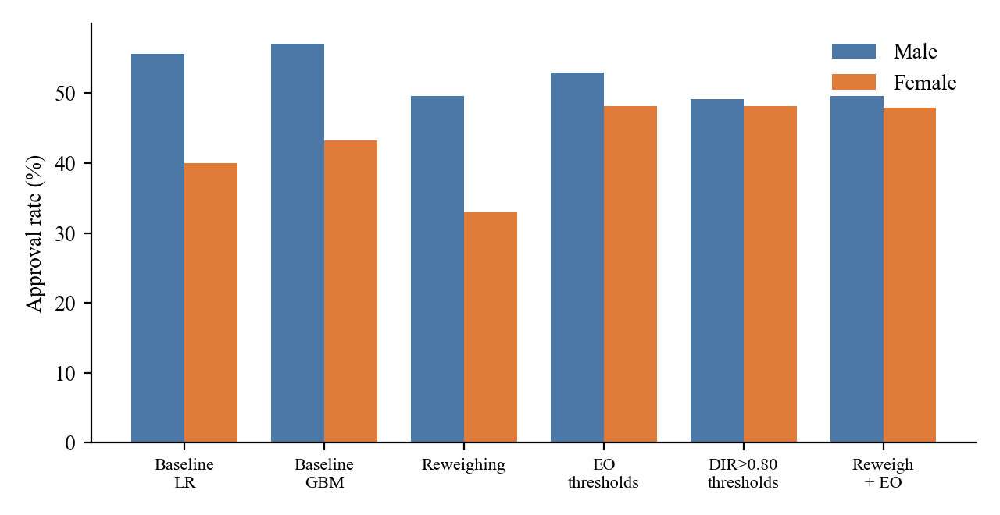
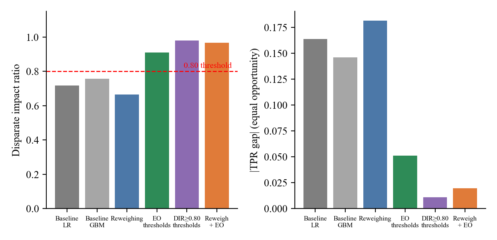
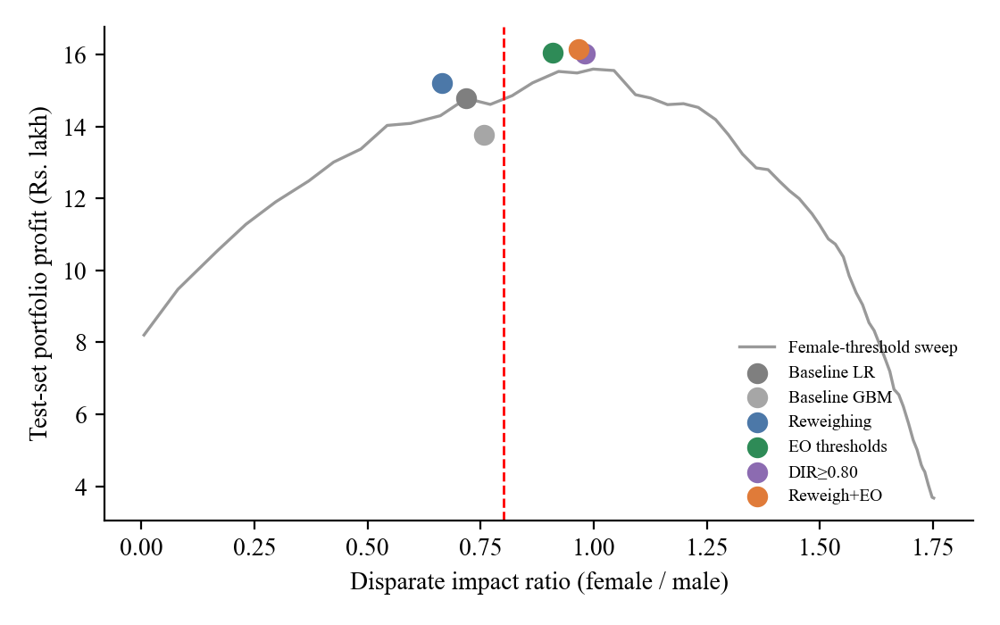
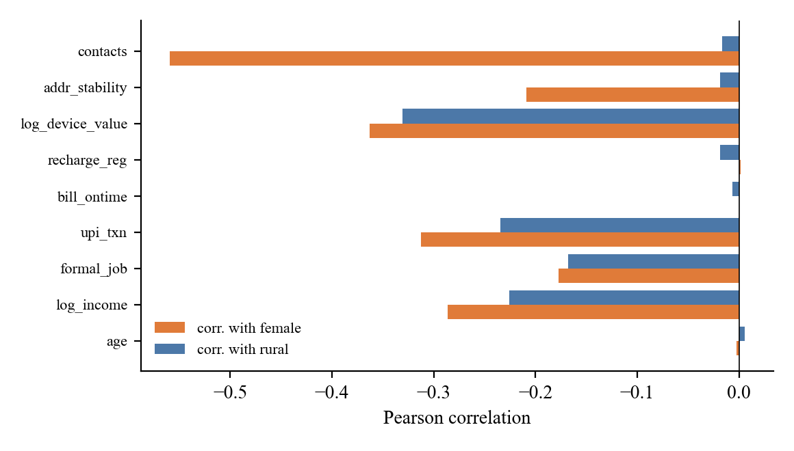
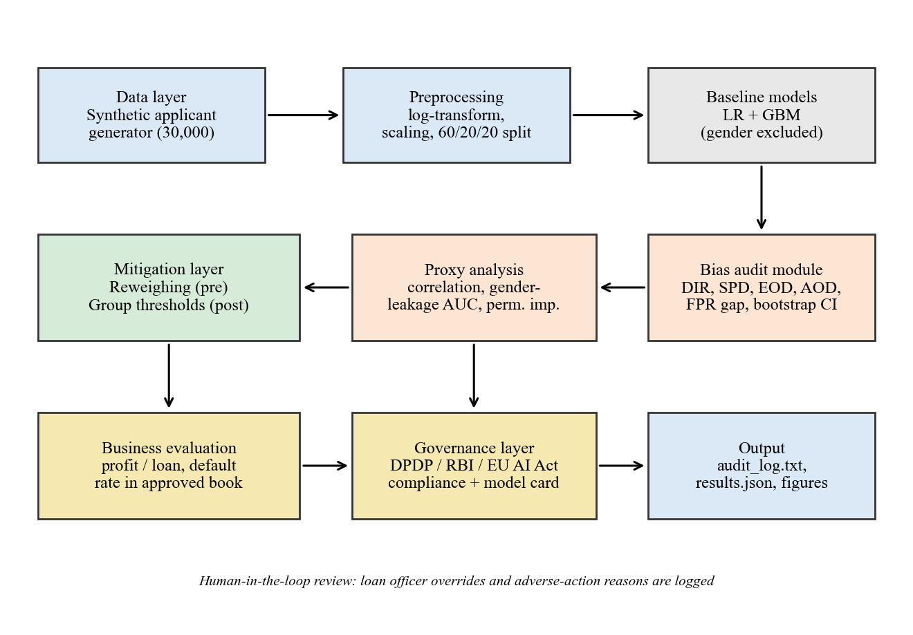

APPROVAL RATE
FIG 01Same data, unequal outcomes

Approval rate by gender across six decision systems. Threshold-based methods narrow the gap.
A practical audit of algorithmic bias in digital micro-lending — measuring who gets approved, uncovering hidden proxies, and testing ways to reduce unfair gaps.
Removing a protected attribute from model inputs does not remove correlated signals. The baseline model approved fewer women, despite similar repayment rates in the synthetic population.

The female approval rate was about 72% of the male approval rate — below the commonly used four-fifths screening benchmark.
Key insight Gender was excluded from the scoring features, but proxy leakage AUC reached 0.897. Alternative signals such as income, transaction activity and device value still carried group information.
See the methods →We compared two baseline models, a pre-processing intervention, and post-processing threshold strategies. No single metric tells the whole story.
The model does not receive gender as an input. Even so, correlated features lead to a substantial approval-rate gap.
Use as the reference point — not as a fair outcome.
DIR approaching 1 indicates similar approval rates; a smaller absolute EOD indicates a smaller true-positive-rate gap.

Profit is evaluated under the project’s assumed loan economics, not real lender performance.
| Method | Male approval | Female approval | DIR | |EOD| | AUC | Profit / applicant |
|---|---|---|---|---|---|---|
| Baseline LR | 55.6% | 40.0% | 0.718 | 0.164 | 0.745 | ₹246.3 |
| Baseline GBM | 57.1% | 43.3% | 0.758 | 0.146 | 0.734 | ₹229.6 |
| Reweighing | 49.5% | 32.9% | 0.665 | 0.181 | 0.745 | ₹253.3 |
| EO thresholds | 52.9% | 48.1% | 0.909 | 0.051 | 0.745 | ₹267.6 |
| DIR ≥ 0.80 | 49.1% | 48.1% | 0.980 | 0.011 | 0.745 | ₹267.1 |
| Reweigh + EO | 49.5% | 47.9% | 0.967 | 0.020 | 0.745 | ₹269.1 |
Features that appear neutral can still encode structural differences. This is why an audit must examine the data and the outcomes — not just the model inputs.

Feature correlation with gender and region in the synthetic training data.
A classifier could recover gender from the gender-blind features with AUC 0.897.
In this experiment, reweighing left the disparity unresolved. A method must fit the actual mechanism producing the bias.
Looking at gender alone can hide differences between urban and rural applicants. Rural women still showed a residual gap.
A single Python script generates applicants, trains models, evaluates fairness, tests mitigation, and saves a scorecard with figures and logs.
30,000 synthetic applicant records with controlled group effects.
Logistic regression and gradient boosting, with gender excluded from features.
DIR, SPD, EOD, AOD, proxy leakage, confidence intervals and profit.
Reweighing and group-specific thresholds, then re-audit.
Noise perturbation and ten independent synthetic seeds.

The project provides a runnable Python script and a detailed report. A graphical dashboard is not implemented in this version; the website presents the recorded experiment results.
Get Python script ↓Change a few fictional applicant signals and compare how a simple illustrative score responds. This is a front-end educational simulation, not the trained Python model and not a real credit decision.
This score is calculated in your browser from a transparent toy formula. It does not use gender, does not call a backend, and is not the experiment's trained model. A real lending decision must never rely on this demo.
Try this: reduce income while keeping bill history high, then compare the score. This illustrates why credit systems should be evaluated across groups and not judged by a single score alone.
Select a fairness metric to see what it measures, how to interpret it, and the baseline versus combined-method result from the synthetic test set.
Female approval rate divided by male approval rate. A value closer to 1 indicates closer approval rates; 0.80 is a common screening benchmark, not a universal legal test.
DIR = female approval rate ÷ male approval rateMitigation choices affect access, risk and governance. The report treats the legal discussion as a preliminary assessment — not a claim of compliance.
Keep decisions reviewable and provide a path for applicants to challenge adverse outcomes.
Record model version, thresholds, metrics and override reasons for traceability.
Recheck fairness as applicant populations and data distributions change.
Group-specific thresholds can raise legal and ethical questions. Context-specific review is essential.
Research prototype disclaimer
This project uses synthetic data and assumed loan economics. Its results demonstrate an audit method and are not evidence of real-world lending bias, creditworthiness, or legal compliance.
Review the full technical report or run the audit script locally. The site is a presentation layer over the recorded experiment, not a live credit decision system.